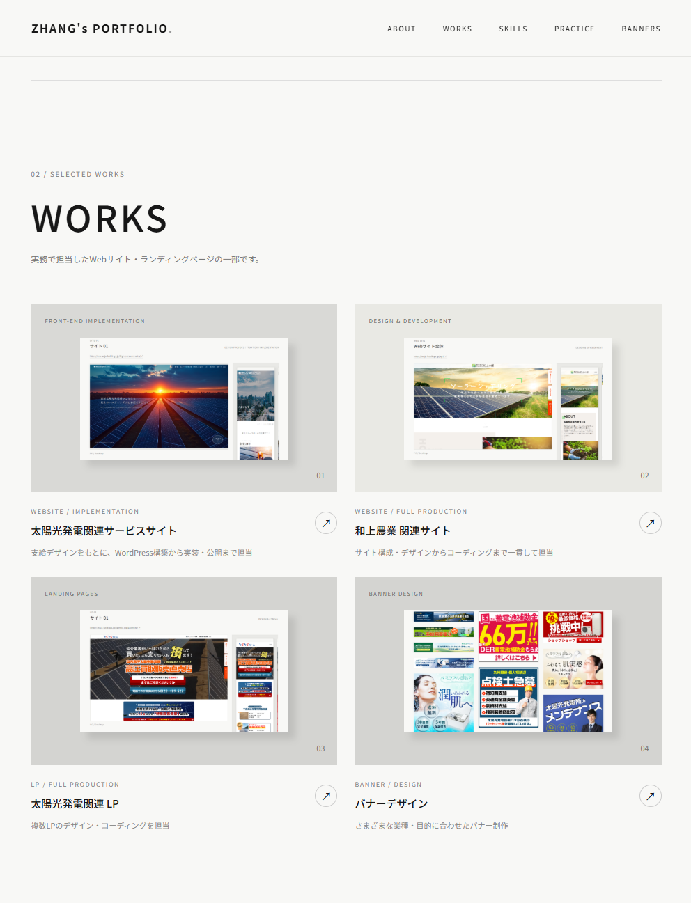

WEB DESIGN / PERSONAL PRACTICE
Website Design
サイト全体の構成・レイアウト・ビジュアルを考案した自主制作デザインです。 ブランドを意識した配色や写真の選定、商品紹介・店舗情報などのコンテンツ設計を行いました。
WEB DESIGN / FRONT-END
独学で身につけた知識と約5年の実務経験を活かし、Webサイト・ランディングページのデザインからコーディングまで幅広く取り組んできました。
制作実績を見る ↘
DESIGN
WITH PURPOSE
01 / ABOUT
独学で学び、
実務を通して磨いてきた
Web制作のスキル。
Web制作に関する専門教育ではなく、興味をきっかけに独学でHTML・CSS・JavaScriptなどを学び、実務の中で知識と技術を身につけてきました。
前職では約5年間、企業サイトやLPのデザイン・コーディング、WordPressでのサイト構築、公開後の更新・保守などを担当。必要な技術を自ら調べ、試行錯誤しながら形にすることを大切にしています。
02 / SELECTED WORKS
実務で担当したWebサイト・ランディングページの一部です。
03 / PRACTICE WORKS
自主制作・デザイン練習として取り組んだ作品です。
WEB DESIGN / PERSONAL PRACTICE
サイト全体の構成・レイアウト・ビジュアルを考案した自主制作デザインです。 ブランドを意識した配色や写真の選定、商品紹介・店舗情報などのコンテンツ設計を行いました。
※ 自主制作作品です。実案件としての制作物とは区別して掲載しています。
04 / SKILLS
Webサイト・LPの画面設計、ビジュアルデザイン、バナー制作
デザインをもとにしたレスポンシブ対応、UI・アニメーション実装
テーマの調整、既存サイトの改修、コンテンツ更新・運用
公開後のページ改善、情報更新、表示・動作確認
HTML5 CSS3 JavaScript jQuery WordPress PHP SQL Photoshop Illustrator